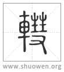

轊
軎或从彗。
宋代 徐鉉 徐鍇 注釋
徐鍇曰：“指事。”
清代 段玉裁《說文解字注》
- 車軸耑也。
耑者、物初生之題也。因以爲凡頟之偁。車軸之末見於轂外者曰軎。軎之言遂也、出也。如鄭說、轂末小穿曰軹。而軎出於此穿外。然古說軹軎多不分。如大馭右祭㒳軹。故書軹爲𨊻。杜子春云。𨊻當作軹。軹謂㒳轊也。是非合轂末軸末爲一乎。今按少儀曰。祭左右軌。大馭曰。祭㒳軹。於事實同。少儀曰祭笵。大馭曰祭軓。范軓於聲同。本無不合。祭㒳轊、所以祭輪也。祭軓、所以祭輿也。言輪輿而全車在是矣。轂末曰軹。乃大鄭刱說。子春未嘗謂轂末曰軹。此注當是本作故書𨊻爲軹。杜子春云。軹當作𨊻。謂㒳轊也。或讀𨊻爲簪筓之筓。葢㒳軎左右出轂外。如筓之出髮。然有鐵舝以鍵之。又似筓之毌髮也。故其字从幵。取上平岐頭之意。若轂末之穿不可冒此名。況當杜時軹訓㒳輢、而不訓轂末小穿。㒳輢非所當祭。故易爲𨊻。漢時故有𨊻字也。漢時亦有訓軹爲軎者。如劉熙曰。軹、指也。如指而見於轂頭也。非訓軹爲軎乎。杜以𨊻改軹。聖人正名之義也。然則作說文者當云𨊻、軎也。从車、幵聲。讀若筓。軎、車軸耑也。从車。象形。乃合。而乃舍𨊻存軎。軹不爲輢之直者衡者、而訓爲車轂小穿。軓不作𨊠、祇作軓。皆使古形古訓散佚無徵。豈所謂涉獵廣博、或有抵啎者與。抑從今書則不錄故書。如儀禮之從今文則不錄古文與。
- 从車。象形。
謂以囗象轂耑之孔。而以車之中直象軸之出於外。于濊切。十五部。○五經文字作？。繫擊之類從之。又曰。？轡同。上說文。下隷變。是則張所見說文作？也。
- 杜林說。
葢倉頡訓纂一篇、倉頡故一篇說如此。
- 軎或从彗。
从車、彗聲。